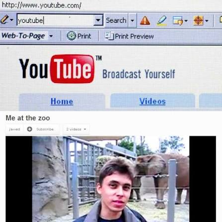
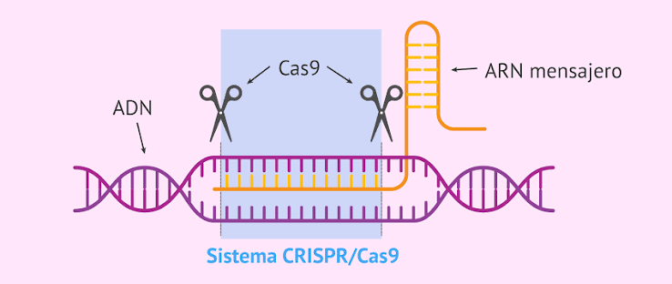
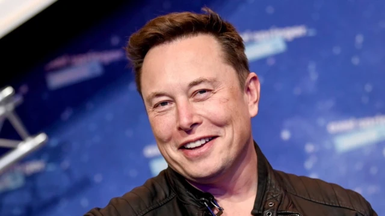

iPhone (1a Generacion/iphone 2G)

Creador/Empresa: Apple (presentado por Steve Jobs)

Descripcion breve:Revolucionó la industria de la telefonía al combinar un teléfono móvil, un iPod con pantalla táctil y un navegador de internet en un solo dispositivo. Eliminó el teclado físico tradicional por una interfaz multitáctil e impulsó la era moderna de las aplicaciones móviles (smartphones).

Creador/Empresa: Mark Zuckerberg (Meta)
Descripción breve: Redefinió las relaciones sociales en la era digital al conectar a miles de millones de personas en todo el mundo. Transformó la comunicación global, la publicidad personalizada y el consumo de noticias en la web.
YouTube

Creador/Empresa: Chad Hurley, Steve Chen y Jawed Karim (Adquirida por Google)

Descripción breve: Democratizó la producción y el consumo de video en internet al permitir que cualquier persona subiera y compartiera contenido audiovisual. Dio origen a la cultura de los creadores de contenido (youtubers) y al streaming moderno.
Bitcoin

Creador/Empresa: Satoshi Nakamoto (Seudónimo)
Descripción breve: Nació como la primera moneda digital descentralizada y criptomoneda del mundo. Introdujo la tecnología Blockchain (cadena de bloques), permitiendo transacciones de valor seguras entre personas sin la necesidad de bancos ni intermediarios centralizados.
CRISPR-Cas9

Creador/Empresa: Emmanuelle Charpentier y Jennifer Doudna
Descripción breve: Revolucionó la biotecnología al funcionar como unas "tijeras moleculares" capaces de editar el ADN de cualquier organismo con una precisión inédita. Abrió la puerta a curar enfermedades genéticas, desarrollar terapias contra el cáncer y mejorar cultivos agrícolas.
Vacunas de ARNm

Creador/Empresa: Katalin Karikó, Drew Weissman (BioNTech / Pfizer y Moderna)
Descripción breve: Tecnología biotecnológica revolucionaria que enseña a las células humanas a producir una proteína para desencadenar una respuesta inmune. Permitieron desarrollar vacunas efectivas contra el COVID-19 en tiempo récord y abrieron la puerta a nuevos tratamientos contra el cáncer y enfermedades infecciosas.
Falcon 9 (Cohete Reutilizable)

Creador/Empresa: SpaceX (Elon Musk)

Descripción breve: Primer cohete de clase orbital capaz de regresar a la Tierra y aterrizar de manera vertical para ser reutilizado. Revolucionó la industria aeroespacial al reducir drásticamente los costos de envío de carga y astronautas al espacio.
ChatGPT

Creador/Empresa: OpenAI (Sam Altman y equipo de investigación)
Descripción breve: Modelo de lenguaje conversacional basado en inteligencia artificial generativa capaz de redactar textos, escribir y corregir código, y mantener diálogos complejos. Democratizó el acceso a la IA al alcanzar más de 100 millones de usuarios en solo dos meses.